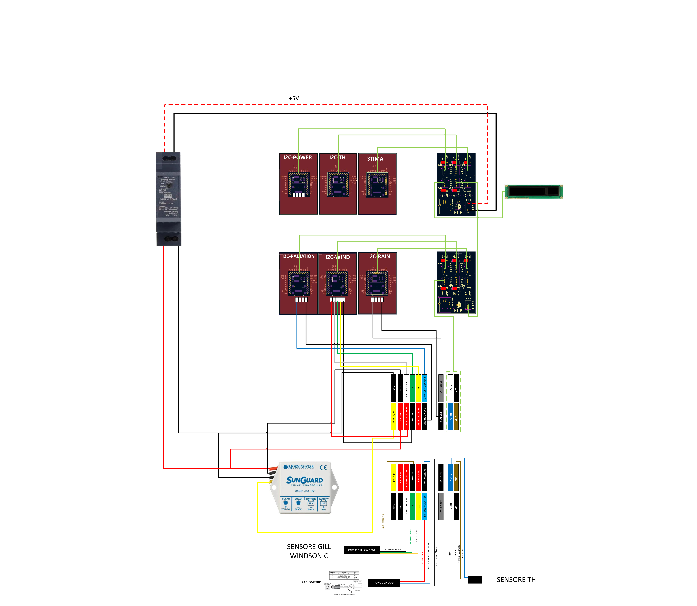

Howto per Stima versione 3.2
Le stazioni nella versione completa consentono la lettura , memorizzazione e invio dei seguenti sensori:
Anemometro GILL WINDOSONIC OPTION1
Sensore Temperatura umidità basato sul sensore SHT35
Pluviometro a bascula da 0.2mm
Radiometro 0-1V 0-2000W/m2
Batteria e pannello solare
La soluzione prevista è quella mostrata in figura:
Cioè si compone di 6 moduli che seguono:
Stima
i2c-th
i2c-Power
i2c-radiation
i2c-wind
i2c-rain
Master
In figuralo schema di massima della pila Master con jumper e configurazione:
i2c-th
In figura lo schema di massima della pila i2c-th con jumper e configurazione:

i2c-power
In figura lo schema di massima della pila i2c-power con jumper e configurazione:
In particolare per la scheda ADC è prevista una modifica con taglio pista e la sostituzione delle resistenza R3 e R7 da 20k a 8.2k.
i2c-radiation
In figura lo schema di massima della pila i2c-radiation con jumper e configurazione:
Per il collegamento del sensore Radiometro ( come mostrato in foto ) collegare:
CAVO DELTAOHM NERO + BLU -> RADIATION GND
CAVO DELTAOHM ROSSO -> RADIATION SEGNALE
CAVO DELTAOHM BIANCO -> RADIATION +12V
Questo il cavo di colegamento al piranometro:

i2c-wind
In figura lo schema di massima della pila i2c-wind con jumper e configurazione:
i2c-rain
In figura lo schema di massima della pila i2c-wind con jumper e configurazione:

Regolatore di carica
Vedi manuale
Schema di collegamento
In figura è riportato lo schema di collegamento del quadro:

Segue invece schema dettaglio della morsettiera di confine: